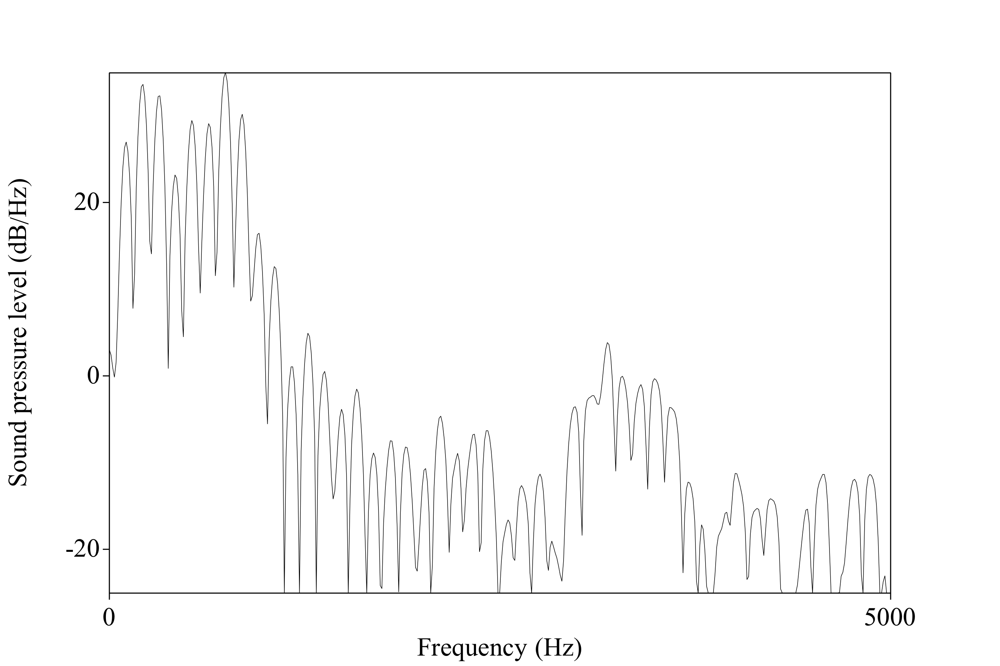

### Follow Up > (The acoustic nerve is like) very limp spaghetti. The brain is like a thick jelly, the Spinal cord like chewed bubble gum, and the nerve roots are like overcooked spaghetti. - Dr. Frank Farokhi --- # Cochlear Implants and Hearing ### Will Styler - LIGN 113 --- ### Today's Plan - CI Review - CI Processing Strategies - What about auditory brainstem implants? - What is CI hearing like? --- ## Review: What is a cochlear implant? --- <img class="r-stretch" src="hearing/ci_diagram.jpg"> --- <img class="r-stretch" src="hearing/ci_installed.jpg"> --- ## What is CI hearing like? --- ## Different! --- ### Why is CI hearing so different? <img class="r-stretch" src="hearing/ci_installed.jpg"> --- ### CIs depend on the use of 'processor' algorithms - "How do we turn the continous spectrum of sound into pulses on a fixed number of electrode channels?" - There are many different processing algorithms - Things like CIS, ACE, HiRes120 - These are chosen by the patient and their audiologist - Many devices can be adjusted to use a new or different one - Each one uses different methods to transform sounds into a pulse train on the electrodes - They are severely constrained by real-time running, battery life and processing power --- ### Cochlear Implant Coding, Generically - Take the input signal - Do an FFT (or use a bank of band-pass filters) - Get 16-22 individual 'bands' - Take the 'spectral envelope' for each band - The amplitude in each frequency band - Now use those envelopes to decide the pulses sent to electrodes - Pulses are sent at anywhere from 900-1800 Hz ---  --- ### One major problem - Neighboring electrodes interfere with each other! <img class="r-stretch" src="hearing/ci_installed.jpg"> --- ### We want to use all the channels - ... but we don't want to use all of them at once --- ### Continuous Interleaved Sampling (CIS) Coding - Do the thing above, choosing the same number of bands as you have electrodes - Every electrode gets activated, one after the other, in a fixed sequence <img class="r-stretch" src="hearing/ci_installed.jpg"> --- ### Advanced Combinatorial Encoder (ACE) Coding - Do the thing above, choosing the same number of bands as you have electrodes - Choose the N highest amplitude bands (often 8-10) and stimulate **only** those electrodes - The person is given only the *loudest* bands, more often - This keeps neighboring electrodes from interfering with each other --- ### Other approaches take other strategies - Dedicating some channels to 'temporal fine structure' (e.g. voice pulses) - 'We'll have two channels that accurately track any pitch below the pulse rate' - 'Virtual channels' - e.g. turning up channels 2 and 3 at the same time when there's something at 2.5 --- (The following figures are from [Wouters et al. 2015, Sound coding in cochlear implants: from electric pulses to hearing](https://ieeexplore.ieee.org/document/7038260) --- <img class="r-stretch" src="hearing/ci_codingboyfell.jpg"> --- <img class="r-stretch" src="hearing/ci_codingboy.jpg"> --- ### There are many algorithms - This is an active area of research! - New encoders can mean major improvements for hearing - CIS to ACE offered 6-9% gains in speech recognition (c.f. Wouter et al. citing Skinner et al.) - This is the 'software' that allows the machine to optimally mesh with the mind --- ### All of these methods are *lossy*! --- ### Lots of information goes away - Continuous spectrum -> 22 channels - The dynamic range is very small (~10 dB) - The frequency range can be much smaller - Masking effects can be complete within bands - You cannot tell A+B from A or B within a single channel --- ### We lose some other detailed information - Fine temporal information goes away - "What is the fundamental frequency?" can be hard to ask - Pinna cues aren't preserved - Lack of frequency resolution - Positioning of microphone - Interaural time and amplitude differences can disappear too! - The two ears aren't always on the same clock cycles - Amplitude differences are subtle and can be squashed - Many people have just one CI --- ### This means that CI sound perception is DIFFERENT - Really, REALLY different - 'Simulating' CI hearing is not possible - You can distort sound into 22 bands, but that's *not* really the same thing - ... but it can be a useful abstraction for raising awareness - 'The Sound of Metal' does this well --- ### Here's a simulation of CI-mediated hearing It's a bit generous, and includes different numbers of channels, but gives a sense of what to expect. <audio controls src="hearing/ci_simulation.mp3"></audio> --- ### This is a fundamentally different mode of perception - Computationally-mediated nerve stimulation - The fact that it's happening in the cochlea is a matter of convenience --- ### Wait a second - Could we do this same sort of stimulation, on other nerves? - **Yes!** --- ## Auditory Brainstem Implants --- ### Auditory Brainstem Implants - "Instead of stimulating the Spiral Ganglion based on sound, let's do the same thing near the base of the 8th nerve" --- <img class="r-stretch" src="hearing/auditory_brainstem_implant.jpg"> --- ### Same idea, different stimulation point - Turn audio into bands - Turn bands into pulses - Put pulses on nerves - Let the brain sort it out --- ### ABIs have many of the same strengths and drawbacks as CIs - They just differ in deployment - ABIs work even when the 8th nerve is damaged beyond the cochlea - The surgery is far more invasive - So, *if you can go the CI route, they're usually a better choice than ABIs* --- ### ... but how good of a choice are either of them? --- ## Cochlear Implant Hearing --- ### You don't just 'turn it on' and people are non-Deaf - 'Turning it on' immediately gives sensation of sound - "There is more noise now than before" - "Huh, beep" - ... but then the work starts! --- ### There are many things configured during 'fitting' - Different processing strategies - Different settings - Number of simultaneous bands - Pulse rate - Different 'loudness' by frequency - 'MCL', or 'Most Comfortable Loudness' --- ### Cochlear Implant hearing requires (re)habilitation - Your brain needs to (re-)learn how to model the world from these pulses - Tonotopic organization helps, but the signal is still *fundamentally* different - Neuroplasticity plays a big role here - Young children often have better outcomes than adults --- ### Measuring Outcomes - How do we want to evaluate outcomes for people? - What matters most when evaluating CI 'effectiveness'? - *All of this varies **greatly** from person to person!* --- ### Can CI users detect sound? - Massive success! - "Huh, beep" perception is more or less universal --- ### Can CI users detect separate sounds playing at once? - Yes! - "How well can the different channels be discriminated?" - Channel 2 may not 'sound' reliably different from channel 3 - Channel 2+3 may not sound different from 2 or 3 - Channels 2 and 5 may even be hard to tell apart - Not all channels may be available to all people - Remember issues with insertion depth? --- ### What do puretone thresholds look like for CI users? > Children with profound hearing impairment who received cochlear implants performed equally to children with severe hearing impairment treated with hearing aids on half of the performance tests. - de Kleijn et al. 2018 > All patients showed hearing improvement over time. Aided thresholds improved significantly (p < 0.01) from a mean of 62.3 dB HL with the preimplant hearing aid to a mean of 39.2 dB HL at 3 months after implantation and 36.3 dB HL at 12 months after implantation (fig. 1). - Lachowska et al. 2015 --- Fig 3: Lachowska et al. 2015 --- ### What does music and sound perception look like? - Music appreciation is generally very hard for CI users - Identifying specific auditory patterns (e.g. birdsongs, or differing tone patterns) may be very difficult - Much of 'natural noise' is missing or distorted --- ### How reliably can adult CI users hear speech? - The story varies! - **Pre-lingually** deafened adults don't generally learn to recognize words - For post-lingually deafened adults, ~35-45% correct words and 65-80% sentence scores - ... but there's a lot of variability! --- --- --- <img class="r-stretch" src="hearing/ci_elderly_speech_3.jpg"> --- ### How about kids? - Children range from ~4-75% accuracy on words, and around 61% accuracy for sentences - Word-in-isolation and sentence scores don't account for context - **This is not natural hearing, but it's not nothing!** --- ### Remember that this is in isolated testing! - Background noise complicates perception substantially - CIs can be amazing in quiet rooms, but useless at parties - 'The Sound of Steel' did an amazing job capturing this --- ### How do people *feel* about their cochlear implants? > The first subgroup of implanted elderly (6 patients, 20%) - showing very good benefits - also displayed very good perception of spoken language through the auditory-sensory modality with familiar and unfamiliar speakers without assistance from lipreading, and with a little help from lipreading in noisy environments. Most of them were able to have a conversation over the phone. After implantation, these elderly became more active in everyday life, often met with neighbors and friends, and were open to meet new people. The mean implant-aided free-field audiometric threshold was <30 dB HL. The oldest patient was 87 years old. - Lachowska et al. 2015 --- ### How do people *feel* about their cochlear implants? > The second subgroup of implanted elderly (20 patients, 67%) showing good benefits - also demonstrated good perception of spoken language through the auditory-sensory modality with a little help from lipreading. The cochlear implant provided better communication and enabled improved contact with other people leading to increased independence in everyday life. Their mean implant-aided free-field audiometric threshold was between 30 and 50 dB HL. The oldest patient was 87 years old. - Lachowska et al. 2015 --- ### How do people *feel* about their cochlear implants? > In a survey of over 20,000 deaf children implanted since 2000, 47 percent had stopped using their CI - (Humphries et al 2016) --- ### Variability is the key takeaway - CIs are *never* like natural hearing - CIs are an amazing choice for some - They're a minor improvement for others - They're useless or harmful for others still - **This is a medical intervention with potential risks and rewards, not a 'sure thing'** --- ### To summarize --- ### Cochlear Implants often provide benefit, albeit at a cost! - Most people will have some sensation of sound from them - Some people gain the ability to speak and understand spoken language - Improvements to lip-reading ability may also improve quality of spoken perception - The 'option' to hear can be situationally useful --- ### Cochlear Implants do not 'restore hearing' - ... any more than a hook restores having a hand --- ### This idea leads to offensive and incautious messaging - "CIs will fix your deaf child and let them lead a normal life!" - "With CIs, your child won't need to resort to signed language!" - "If you can afford CIs for your children, not doing so is neglectful!" - "In the worst case, they can just learn sign and join the deaf community!" - **Each one of these statements is problematic!** --- ### ... but there exists a middle ground - Bicultural/Bilingual approaches - CIs targeted for environmental awareness only - Use of these implants as tools - **The best approach is what's best for the individual!** --- ### More info on CIs - [Here's a detailed document from ASHA](https://www.asha.org/policy/TR2004-00041) --- ### We need to understand the variance to understand the attitudes - CIs can be a life-changing enhancement, providing the ability to hear and understand speech - CIs can also be a spectacular waste of $30,000-60,000 dollars, which don't merit continued use - There's relatively little indication as to which people will have which experience --- ### Will's Personal takeaway - There's no harm in teaching and learning sign - Bilingualism is never harmful, and signed language is guaranteed to work well for Deaf folks - 'Going all in' on CIs and Spoken language is unwise - There's some indication that early sign exposure improves outcomes for spoken language with CIs - You can't guarantee a good outcome from the CIs, and language deprivation is a *major* risk - Attitudes like "CIs are always bad and getting them makes you bad" are equally unwise - They can be great for some, and people's choices and body autonomy should be respected - **Your role is to give choices and information, grounded in science and data** --- ### Wrapping Up - Cochlear Implants stimulate the nerves directly based on incoming audio - Processing algorithms turn sound into stimulation - ABIs work the same way, but deeper down the nerve! - CI-mediated hearing is not the same as natural hearing - There's massive variability in outcomes from person to person --- ### Next time - What questions remain? - 'What was the most interesting thing you learned this quarter?' - Wrapping up the course --- <huge>Thank you!</huge> --- ### References de Kleijn JL, van Kalmthout LWM, van der Vossen MJB, Vonck BMD, Topsakal V, Bruijnzeel H. Identification of Pure-Tone Audiologic Thresholds for Pediatric Cochlear Implant Candidacy: A Systematic Review. JAMA Otolaryngol Head Neck Surg. 2018;144(7):630–638. doi:10.1001/jamaoto.2018.0652 Lachowska M, Pastuszka A, Glinka P, Niemczyk K. Benefits of cochlear implantation in deafened adults. Audiol Neurootol. 2014;19 Suppl 1:40-4. doi: 10.1159/000371609. Epub 2015 Feb 20. PMID: 25733366.